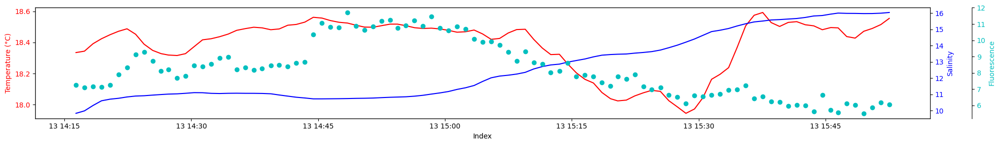
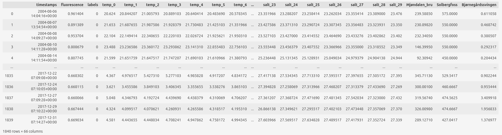
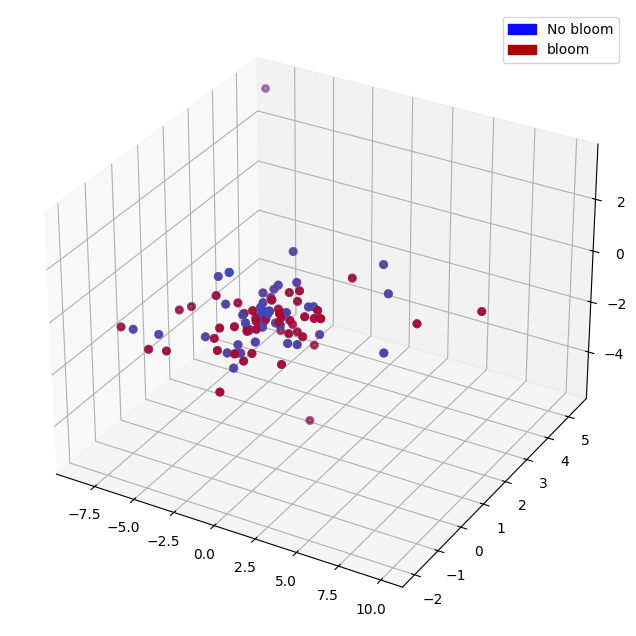
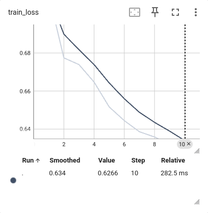
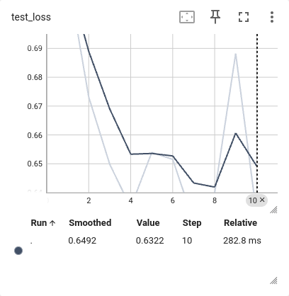
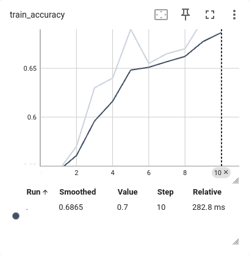
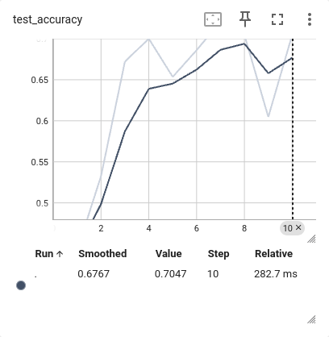
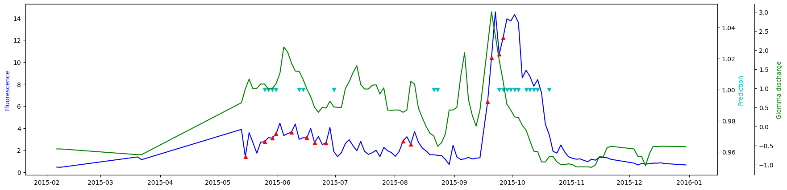

Ferrybox data¶
We also train ML models on data from the NIVA ferrybox observation programs. These programs provide surface measurements of several seawater parameters following the tracks of some ships, e.g. Oslo-Kiel, Tromso-Longyearbean, etc.
Input data¶
For this project, we extract temperature, salinity, and fluorescence snippets from a Color Fantasy cruise ship ferrybox track (Oslo-Kiel) records. We use surface measurements from latitude 59.7 northwards until Color Fantasy docks in Oslo. Then we interpolate / extrapolate the snippets to the same length (30 points).
An example track snippet: 
We also use the river discharge data from 3 observation stations around Oslo: Solbergfoss (Glomma), Mjøndalen bru (Drammen), and Bjørnegårdssvingen (inner Oslo fjord).
Input data example before normalization: 
For training, we use temperature and salinity values (surface horizontal profiles, 30 points each) and discharge values from 3 rivers.
Labeling¶
First, we calculate the average fluorescence values in the snippets.
Lets call them fluo.
Then we label a snippet 1 (bloom) if the next timestamp (should be in less than three days) fluo > 3 and its greater than the current fluo.
Results¶
Similar to the modeled data, for principal component analysis and decision tree classifier training, we use increments of variables for 1 and 2 consecutive periods instead of snapshots. For deep learning classification, we use 3 consecutive snapshots as input data for a training point. We normalize all data columnwise (through time).
All data are balanced (equal number of points with label=0 and label=1). The data used for training and testing are separated in time. For testing, we use all data after 2015.
Principal Component Analysis (PCA) and Decision Tree Classifier¶

The PCA on the ferrybox data shows that the projected data is evenly distributed between ‘bloom’ and ‘no bloom’. This means that the current data vectors cannot be separated between ‘bloom’ and ‘no bloom’ very well. The decision tree classifier we trained on the data couldn’t achieve more than 50% accuracy, which is no better than a random classifier.
Deep Learning Classification¶
A deep learning classifier performs better than a random or decision tree classifier. To avoid overfitting, we use a small network with [13, 7, 13, 2] features. We also trained the network for only 10 epochs (1 epoch is training with all data in a dataset).
Train dataset |
Test dataset |
|---|---|
 |
 |
 |
 |
Test loss and accuracy improve over time, so the classifier learns to distinguish ‘bloom’ from ‘no bloom’.
A test year predictions, red triangles - labels 1 (bloom): 
Predictions are close to label=1 points, but do not match too often. There are many false positives. Most of the accuracy comes from predicting ‘no bloom’ points. In 2015 there is actually only 1 big bloom (in fall) and therefore only 1 point we are really interested in predicting. (A spring bloom was apparently missed due to missing observations). The fall bloom is not labeled 1, which means there was a data gap before or during the bloom. The classifier couldn’t predict this bloom.
Conclusion¶
It is possible to train a ML model using only the observational data. But using only the Ferrybox data is not enough, apart from the horizontal surface profiles of temperature and salinity, we need other data. In this project, we used river discharge data from the observation stations near the ferrybox track.
Before using river discharge as input data, we tried to predict blooms using only horizontal surface profiles of temperature and salinity. The test loss and accuracy didn’t improve in this case, but the training loss and accuracy improved over time. This means that the neural network could remember the specific patterns of temperature and salinity profiles that correspond to blooms, but couldn’t generalise them. This could happen for 2 reasons: not enough data, or/and the temperature and salinity profiles don’t have enough information to predict blooms.
Adding river discharge to the input data enabled learning. We expect that adding other data on precipitation, nutrients from the stations, etc. will improve the accuracy of the predictions.
Unfortunately, adding new parameters to the observation vector cannot solve the main problem of using only observations for ML model training - not enough data. There are usually only 2 blooms per year, in spring and autumn. For 20-25 years of Ferrybox data, this means that we only have at most 50 blooms that we want to predict.
But the Ferrybox data can still be valuable. We need to combine modelling and observations in the data-driven model.